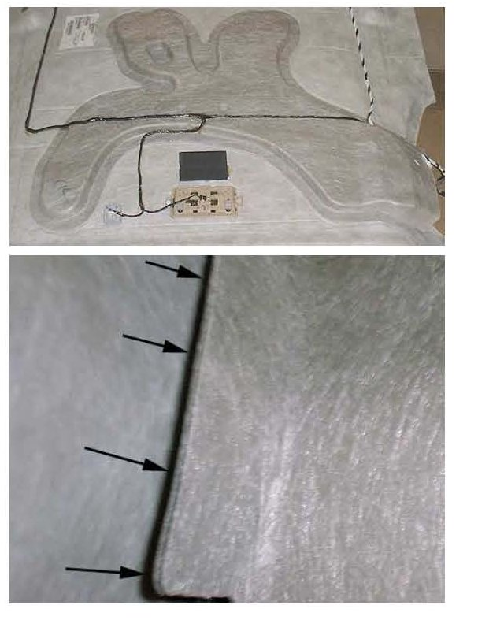
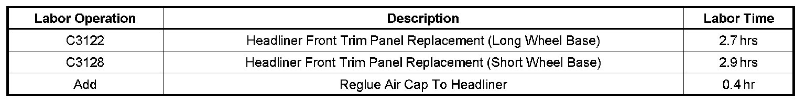

A/C - Insufficient Air Flow From 2nd Row Roof Vents
TECHNICALBulletin No.: 08-08-110-014
Date: October 07, 2008
Subject:
Insufficient Air Flow from Second Row Passenger Roof Vents (Reattach Air Cap to Headliner)
Models:
2007-2009 Cadillac Escalade, Escalade ESV
2007-2009 Chevrolet Suburban, Tahoe
2007-2009 GMC Yukon, Yukon XL, Yukon Denali, Yukon Denali XL
Condition
Some customers may comment on a lack of or no air from the second row passenger roof vents.
Cause

This condition may be caused by the air cap separating from the headliner.
Correction
Reattach the air cap to the headliner using the following procedure:
1. Remove the headliner wiring harness from the left and the right windshield pillar. Lower the headliner so it's laying across the seats. Refer to Headlining Trim Replacement in SI if necessary.
2. Inspect the air cap for separation (gaps).
3. Apply a hot melt adhesive stick between the headliner and air cap where separation is found.
4. Once the hot melt adhesive has cured, place a bead of adhesive in the joint between the air cap and the headliner around the entire perimeter of the air cap.
5. Reinstall the headliner. Refer to Headlining Trim Replacement in SI if necessary.
Parts Information

Warranty Information

Disclaimer